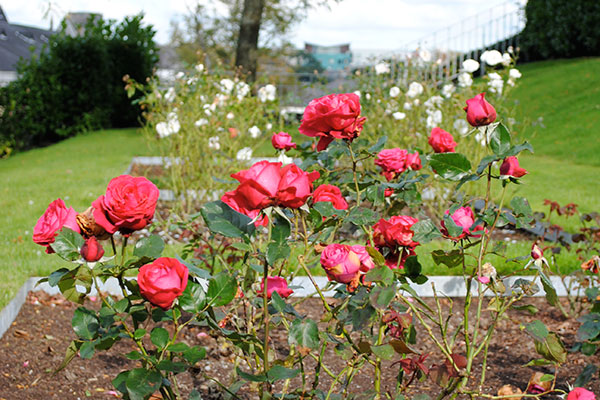

Kilkenny - October 15, 2013
"As I sat there with my pint in my hand, enjoying the jigs and the reels, I watched the joy in the player’s faces and in those around them who tapped their feet and applauded enthusiastically. Music the joybringer." - Tony Hawks
The best way to describe Kilkenny -- colorful. The streets, restaurants, gardens, and galleries were all brimming with color and life.
After driving several hours from Doolin, we didn't have much time left in the day. So after a necessary pit stop for coffee and pastries, we went straight to Kilkenny Castle to tour to the castle and its grounds.
We spent the rest of the day wandering the streets of Kilkenny and popping into arts & crafts shops. We even stumbled into the filming of a movie! I left wishing we had an extra day (or three) to explore.

Where we stayed
The Pembroke Hotel - http://www.kilkennypembrokehotel.com/
Where we ate
The Food Hall @ the Kilkenny Design Centre - http://www.kilkennydesign.com/Topic/39-food-hall.aspx
The Grapevine Wine and Tapas Bar - http://www.thegrapevinetapasbar.com/